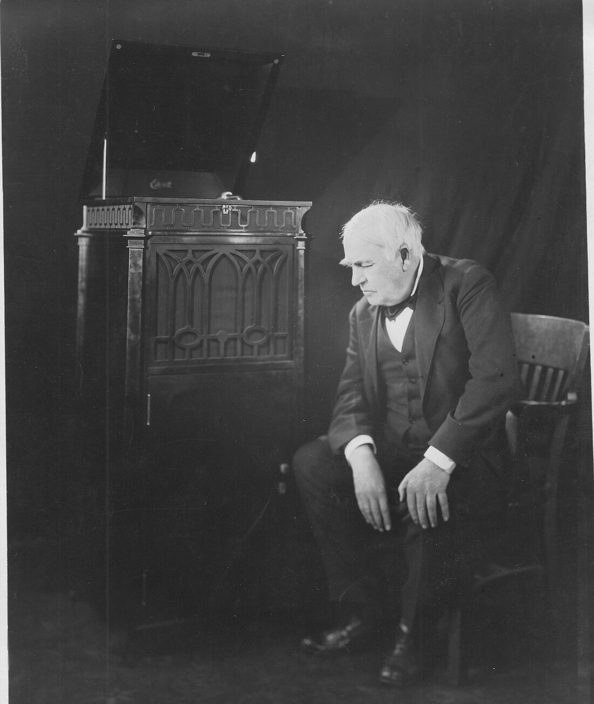
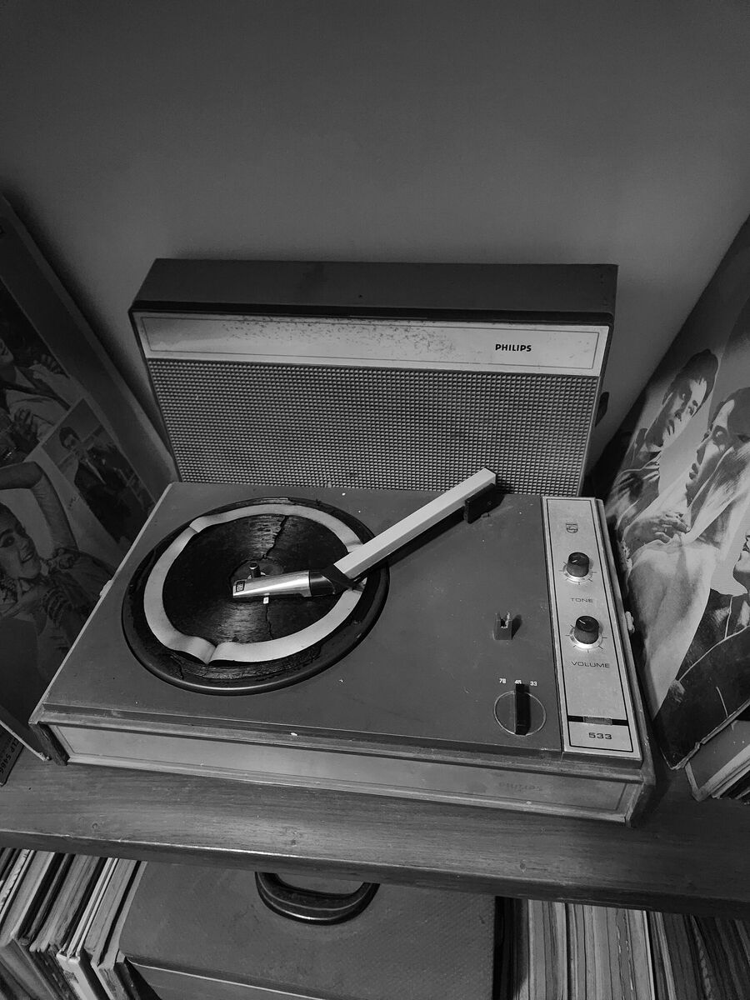
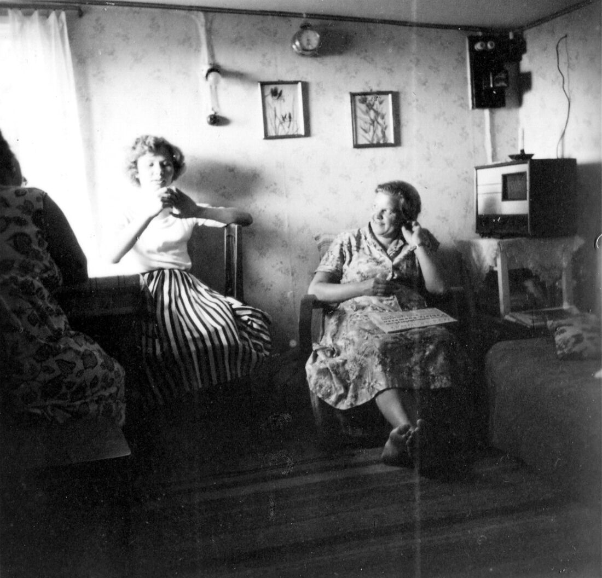

Oíste “liver”.
Era river. Rápido, la r inglesa se parece a una l y el oído las junta.
Song Dictation pausa cada verso de una canción en inglés y te marca, palabra por palabra, lo que entendiste.

Gratis, con cualquier video de YouTube. Sin cuenta.
Elegir una canciónNueve frases con las trampas que más confunden a quien habla español. Elegí una, escuchala y escribila: te marca cada palabra igual que la app.
Practicar con una canciónCada error te muestra un sonido del inglés que todavía no distinguís. La app te lo marca en rojo, verso por verso, hasta que lo oís.
Era river. Rápido, la r inglesa se parece a una l y el oído las junta.

Era ship. La i corta del inglés no existe en español, y suena a la larga.
Era thirteen. El acento cae al final, thir-TEEN, y eso cambia el número.
Era very. En español la b y la v suenan igual; en inglés, no.
Reproduce solo el verso que toca y se detiene al final, con un cuarto de segundo de cola para no cortar la última sílaba.
El mismo verso a 0.75x cuando una palabra se te escapa.
Verde lo que acertaste, rojo lo que faltó, tachado lo que sobró. No cuenta mayúsculas ni comas.
Una palabra de cada cuatro, la mitad del verso o el verso entero.
Primero la forma de cada palabra, después una letra más. Cada pista cuesta dos puntos.
Cada verso empieza tapado y aparece cuando lo escribís bien. Ves cuánto de la canción ya es tuyo.
Entender una canción no es talento: es oído, y el oído mejora con repetición. Un verso por vez.
Grupo escuchando la radio, entre 1909 y 1923.
Por nombre y artista. Traemos la letra con el tiempo exacto de cada verso.
Cualquier link de YouTube. Mejor el audio oficial, que no trae intro.
La app lo reproduce y se calla. Repetilo las veces que quieras, o más lento.
Verde lo que acertaste, rojo lo que se te escapó. Enter, y al siguiente.
